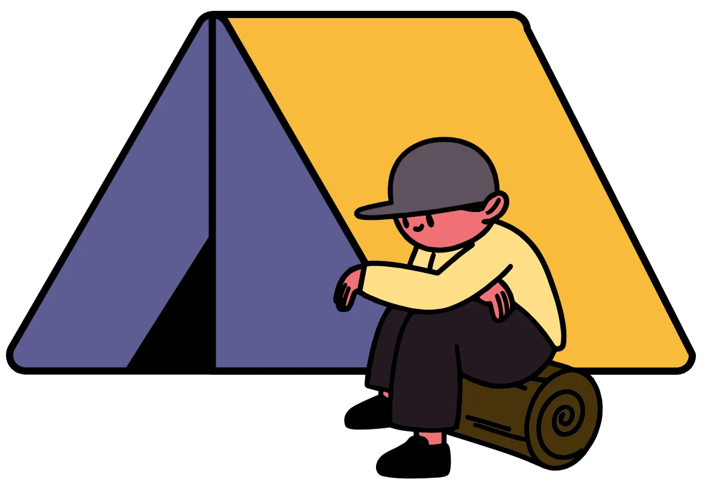
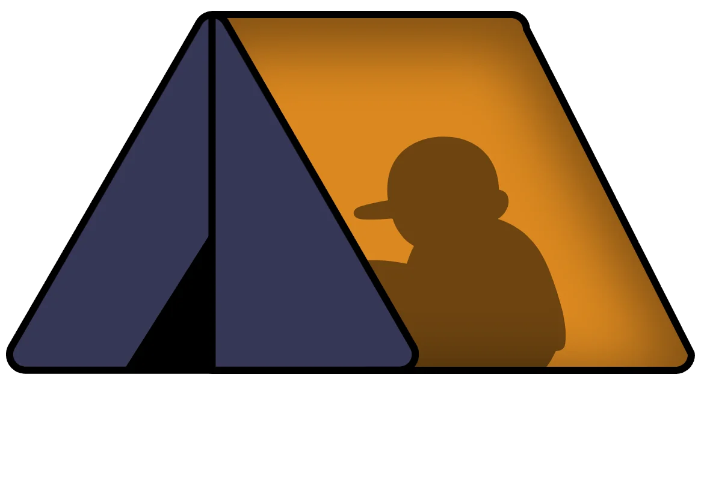
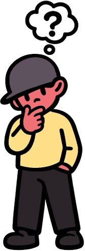
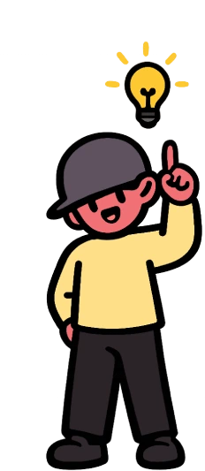
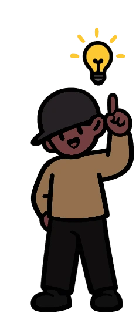
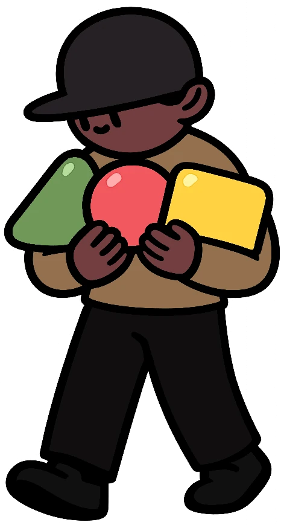
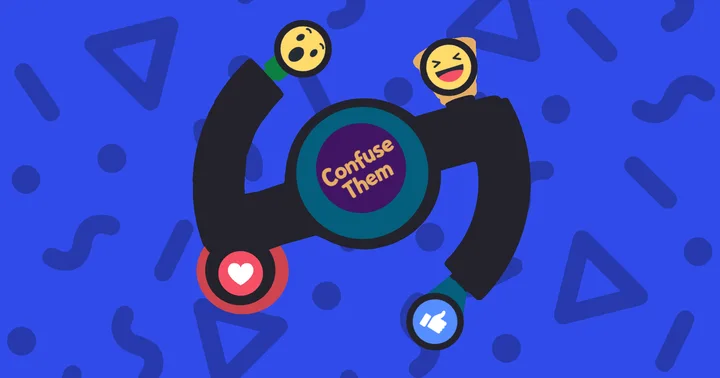
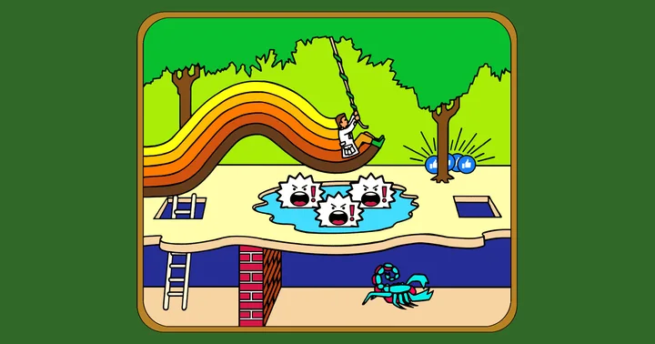
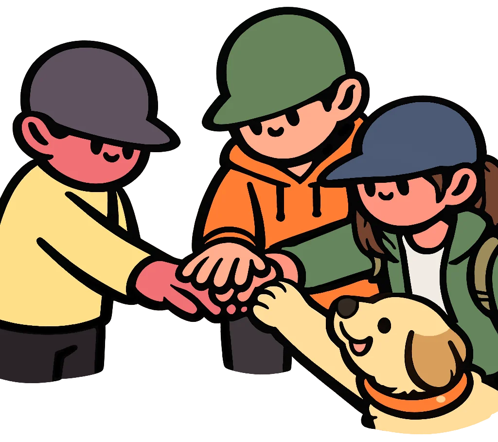
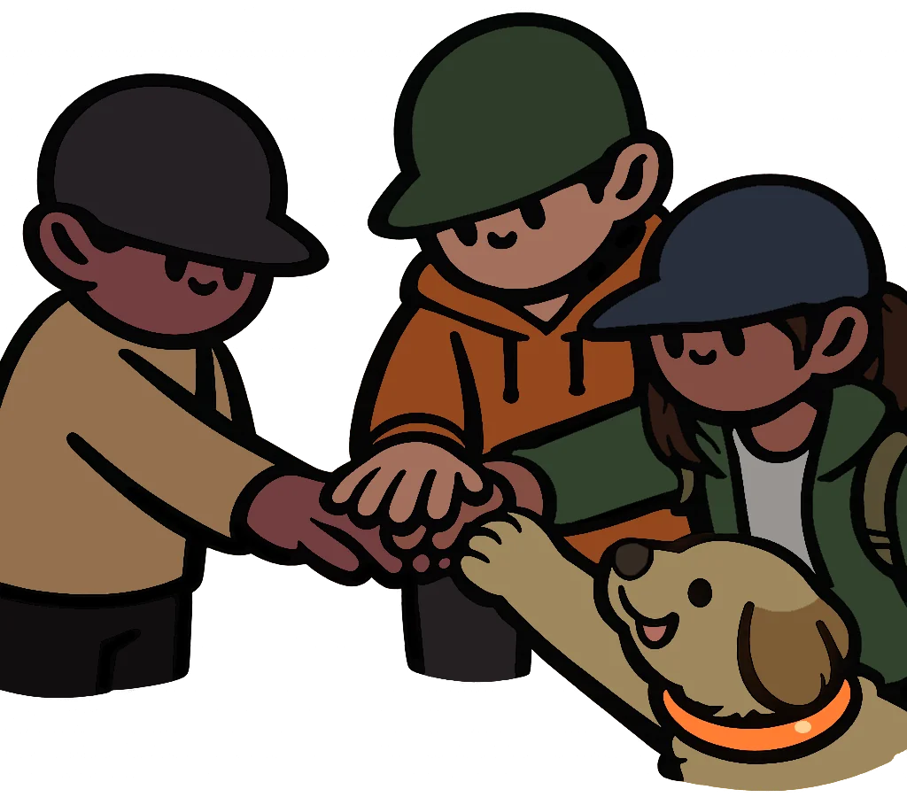

Social media strategy consultancy
Strategy
as shelter.
Social media is a dark and noisy forest. I help brands and the teams behind them build the system that gets them through it, connecting every post, reply and ad dollar to business growth.


Trusted by 100+ brands including , , , and
It's no wonder brands get lost out here.
Channels, features, search results, news, opinions. And those algorithms. Every week brings many distractions, and it's easy to spend time on activity without knowing whether any of it moved the business.
The good news: it doesn't have to be this way.

Strategy is a finite system.
Each part connects to your business, marketing and social objectives, with evidence it drives growth instead of vanity metrics. It keeps every decision, workflow and stakeholder heading the same direction.
Foundation
- Business, Marketing, Social Priorities
- Role of Social Media
- Objectives, Measurement
- Budget
- Social Audiences
- Social Channel Roles
- Automation
Governance
- Risk
- Legal
- Compliance
- AI Governance Policy
- Platform Policy Compliance
- Account Security Protocols
- Employee Access Controls
Customer Care
- Operations, Processes
- Team Structure
- Community
- Customer Servicing
- Response Scenarios
- Social Listening
- Crisis Preparation
Content
- Owned Assets
- User-Generated
- Influencers, Partners
- Employer Brand
- Executive Presence
- Employee Advocacy
- Social Selling
Social by Design
- Accessibility
- Brand Guidelines
- Editorial Style Guide
- Dynamic Elements
- Social Post Templates
- Integrated Marketing
- Media Optimization
Social Advertising
- Audience Targeting
- Retargeting
- Budget Allocation
- Social Media Pixels
- A/B Testing
- Brand, Conversion Lift
- Conversion Optimization


Put it all together and you have a Social Media Playbook:
one system, tied end to end to business growth.
Start with one question, or bring the whole expedition.
Scope, timing and fee can flex on everything.
No content creation or influencer management here,
just the strategy and the system behind it.

Nice to meet you.
I'm Jason King, a social media strategist who helps brands and individuals solve hurdles to business growth.
Freelance, fractional, independent. However you put it, I'm your partner.
in-house, startup
“Kind people are my kind of people.”Connect on LinkedIn (opens in a new tab)
Social media insights.
Field notes on what actually works in social, plus a look at the tools I built for clients.

Meta's own research: engagement doesn't correlate with sales

The many pitfalls of organic social reach
LinkedIn Lockout Toolkit
Client tools
Before you pack.
Something else on your mind? Get in touch.
Who do you work with?
Brands and the marketing and communications teams behind them, across industries. I also work with executives, spokespeople, consultants and small business owners on their personal presence.
Do you create content or manage influencers?
No. I build the strategy and the system: what to make, for whom, why, and how you'll know it worked. Influencer and partner strategy can be part of a Playbook, but production and day-to-day influencer management stay with your team or partners.
How do engagements work?
Freelance, fractional or independent, whichever fits. That can be a single call, a scoped project like an audit or Playbook, or a retainer (typically six months) where I embed as your strategist and operator.
How is pricing set?
Every service lists a starting price so you know the ballpark up front. Scope, timing and fee can then be adjusted to fit what you actually need.
Where should I start?
If you have one burning question, try Little Answers. If you want to talk through where you are, contact me and we'll figure out the right trail together.

